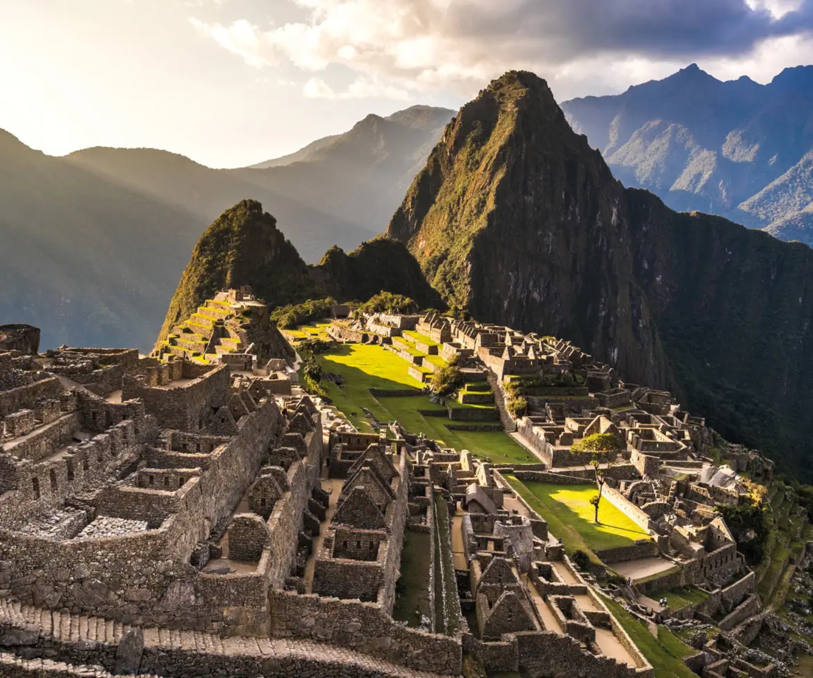
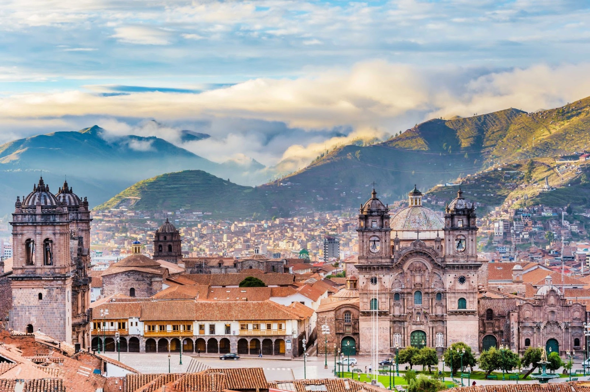
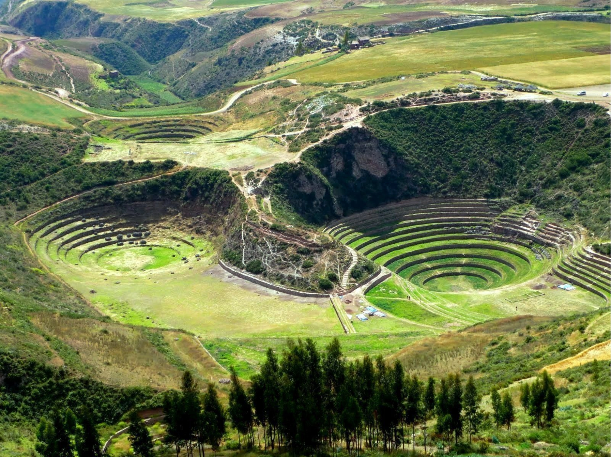
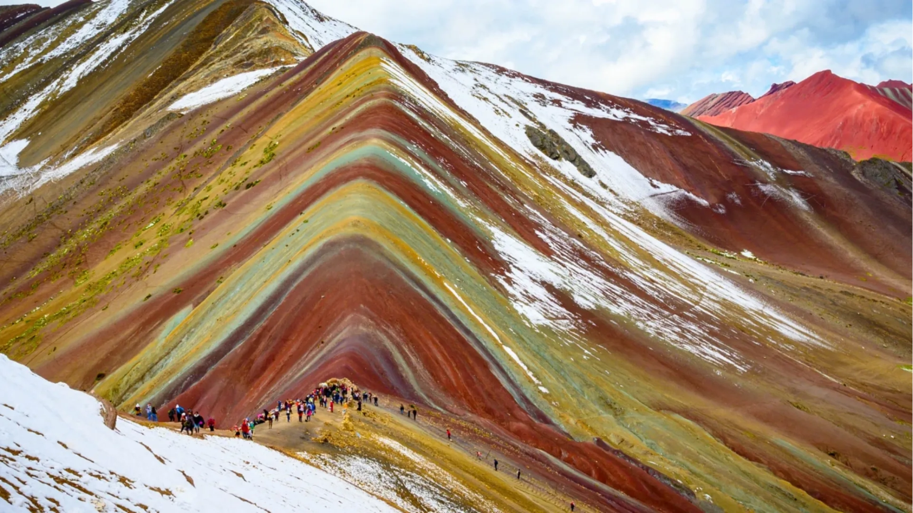

01
Machu Picchu
La majestuosa ciudadela inca, una de las 7 Maravillas del Mundo Moderno, oculta entre las nubes a 2,430 m.s.n.m.

El Ombligo del Mundo
📍 Sierra sur del Perú · 3,399 m.s.n.m. · Machu Picchu · Valle Sagrado · Capital del Imperio Inca
Arribo al Aeropuerto Internacional Velasco Astete (CUZ). Vuelos constantes desde Lima con una hora de duración aproximada.
La elevación es de 3,399 m.s.n.m. Conviene descansar el primer día, mantenerse hidratado y beber mate de coca para evitar el mal de altura.

La majestuosa ciudadela inca, una de las 7 Maravillas del Mundo Moderno, oculta entre las nubes a 2,430 m.s.n.m.

Explora el mercado artesanal de Pisac, las terrazas circulares de Moray y las Salineras de Maras con más de 3,000 pozas de sal.

Una obra maestra de la geología andina a más de 5,000 metros de altura. Cumbres teñidas por minerales que crean un espectáculo cromático único.